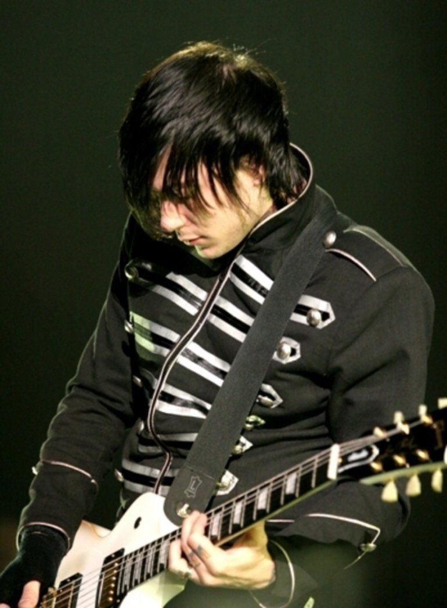
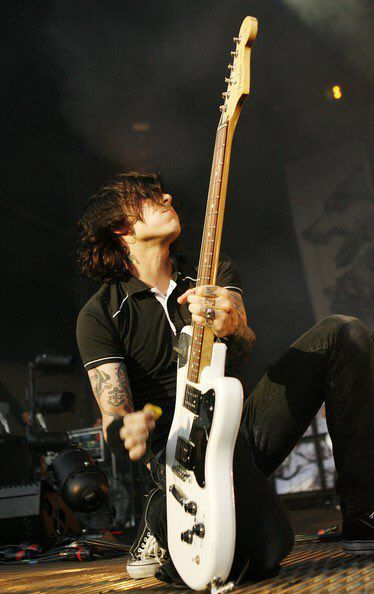
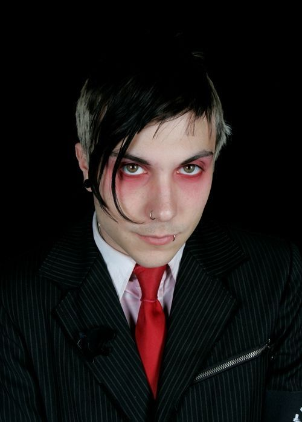

Frank Iero

2004

The Black Parade

Frank Iero

En Danger Days

2014


Biografía e información
Frank Anthony Iero Jr. (Belleville, Nueva Jersey, 31 de octubre de 1981) es un músico estadounidense, conocido por ser el guitarrista rítmico y corista de My Chemical Romance. Además de la banda, desarrolló una carrera propia con varios proyectos de punk, hardcore y rock alternativo, tanto en grupo como en solitario. Su estilo es más crudo y agresivo que el de otros miembros de la banda, algo que se nota en sus discos solistas. Nació en la escena punk y hardcore de Nueva Jersey, mucho antes de que My Chemical Romance se hiciera famosa.
Cuando My Chemical Romance se separó en 2013, Frank empezó a escribir canciones en su estudio casero. Lo hizo casi como una forma de terapia y sin pensar en publicarlas. Esas canciones se convirtieron en su primer álbum, y desde entonces lanzó cada disco con un nombre de banda distinto: *frnkiero andthe cellabration*, *Frank Iero and the Patience* y, desde 2019, *Frank Iero and the Future Violents*.
*Stomachaches* es el álbum debut de Frank Iero como solista, publicado el 26 de agosto de 2014 bajo el nombre frnkiero andthe cellabration. Es un disco crudo y ruidoso, con mucho de hardcore y punk. Nació en un momento difícil para él, ya que escribió las canciones mientras se recuperaba de la separación de la banda, y al principio no pensaba lanzarlo. Recibió buenas críticas y apareció en las listas de mejores discos de 2014 de revistas como Kerrang! y Rock Sound. Entre sus canciones se destacan "Weighted" y "Joyriding".
*Parachutes* salió el 28 de octubre de 2016 con el nombre Frank Iero and the Patience. Es un álbum más emotivo y variado que el anterior, con doce canciones. Se publicó pocas semanas después de que la banda sufriera un grave accidente de tránsito durante su gira por Australia, lo que obligó a cancelar el resto de las fechas. Frank volvió a los escenarios en 2017 y publicó el EP *Keep the Coffins Coming*, de cuatro canciones y producido por Steve Albini.
A fines de 2018, Frank anunció su nuevo nombre, Frank Iero and the Future Violents, y en mayo de 2019 lanzó *Barriers*, su tercer álbum de estudio. Fue el primero con esta nueva formación y la revista Loudwire lo incluyó entre los mejores discos de rock del año. Frank contó que, igual que los anteriores, no era un disco que hubiera planeado hacer, y que esta vez lo hizo desde un lugar más tranquilo.
En enero de 2021 Frank lanzó *Heaven Is a Place, This Is a Place* junto a Frank Iero and the Future Violents, continuando con el sonido de *Barriers*.
Frank empezó a tocar en bandas locales de la escena punk de Nueva Jersey a los 11 años. Antes de My Chemical Romance pasó por grupos como Sector 12, Hybrid e I Am a Graveyard, y después formó parte de varios proyectos paralelos y supergrupos fuera de la banda.
Pencey Prep fue la banda principal de Frank antes de My Chemical Romance. Era el cantante y guitarrista de este grupo de punk y post-hardcore de Nueva Jersey, que publicó su único álbum de estudio, Heartbreak in Stereo, el 26 de noviembre de 2001 a través de Eyeball Records (el mismo sello que después lanzaría el primer disco de MCR).
Sobre el álbum Heartbreak in Stereo (2001): Grabado en Nueva York y Nueva Jersey, combina punk rock, emo y post-hardcore con teclados prominentes y letras personales. Debido a que se volvió muy difícil de conseguir cuando MCR alcanzó la fama, el sello lo relanzó en 2007. Entre sus temas más recordados están "Yesterday", "Don Quixote", "The Secret Goldfish" y "8th Grade". Fue a través de esta banda que Frank conoció a Gerard Way, Mikey Way y Ray Toro, ayudándolos a conseguir sus primeros shows antes de unirse oficialmente a MCR en 2002.
Leathermouth fue un proyecto paralelo de hardcore punk y screamo que Frank formó en 2007 con amigos en Nueva Jersey, mientras seguía en My Chemical Romance. Fue la primera banda en la que volvió a escribir letras y ocupar el rol de vocalista principal desde Pencey Prep.
Sobre el álbum XO (2009): Tras firmar con Epitaph Records a fines de 2008, lanzaron su único disco, XO (también estilizado como XØ), el 27 de enero de 2009. Es un álbum breve y visceral de poco más de 23 minutos con diez canciones cargadas de rabia, crítica social y frustración personal. Llegó al puesto 21 de la lista Top Heatseekers de Billboard y contó con videoclips y adelantos como "Bodysnatchers 4 Ever", "Sunsets Are for Muggings" y "5th Period Massacre".
Death Spells nació tras la pausa y separación de MCR, cuando Frank se unió a James Dewees (tecladista de The Get Up Kids y Reggie and the Full Effect, con quien ya había tocado en Leathermouth). Es un dúo de hardcore digital con un sonido industrial, experimental, ruidoso y oscuro.
Sobre el álbum Nothing Above, Nothing Below (2016): Luego de adelantar material desde 2013, su único álbum de estudio salió el 29 de julio de 2016 mediante Vagrant Records. El disco mezcla sintetizadores distorsionados, bases electrónicas pesadas y gritos crudos a lo largo de doce pistas, destacando canciones como "Why Is Love So Disastrous?", "Diluted", "Hate Unconditional" y "Choke On One Another".
Reggie and the Full Effect es el proyecto principal de James Dewees. Frank colaboró con la banda en distintas etapas como guitarrista en vivo y músico invitado en estudio, participando en canciones del álbum No Country for Old Musicians (2013).
L.S. Dunes es un supergrupo formado por referentes de la escena emo y post-hardcore: Frank Iero (guitarra), Anthony Green de Circa Survive (voz), Travis Stever de Coheed and Cambria (guitarra), y Tim Payne y Tucker Rule de Thursday (bajo y batería).
Álbumes de estudio:
• Past Lives (11 de noviembre de 2022): Su álbum debut, producido por Will Yip y editado por Fantasy Records. Nacido durante las sesiones de ensayo en pandemia, presenta un sonido post-hardcore urgente y melódico con canciones como "Permanent Rebellion", "2022" y "Bombsquad".
• Violet (31 de enero de 2025): Su segundo álbum de estudio, también grabado junto al productor Will Yip. El disco expande su sonido incorporando matices de rock alternativo, indie y grunge sin perder su energía post-hardcore. Incluye diez canciones, entre ellas los sencillos "Fatal Deluxe", "Machines" (cuyo video fue codirigido por el propio Frank), "Paper Tigers" y "Violet".
• Nació el 31 de octubre de 1981, por lo que es unos años menor que Gerard Way.
• Empezó a tocar en bandas a los 11 años y su padre quería que fuera baterista, pero terminó eligiendo la guitarra.
• Se unió a My Chemical Romance durante la preproducción de su primer disco y estuvo en todos sus álbumes.
• Se casó con Jamia Nestor el 5 de febrero de 2007, después de proponerle matrimonio durante la grabación de *The Black Parade*.
• En cada disco solista cambió el nombre de su banda.

